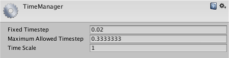

Time
The Time settings (menu: Edit > Project Settings, then the Time_ category) lets you set a number of properties that control timing within your game.

Properties
| Property: | Function: |
|---|---|
| Fixed Timestep | A framerate-independent interval that dictates when physics calculations and FixedUpdate() events are performed. |
| Maximum Allowed Timestep | A framerate-independent interval that caps the worst case scenario when frame-rate is low. Physics calculations and FixedUpdate() events will not be performed for longer time than specified. |
| Time Scale | The speed at which time progresses. Change this value to simulate bullet-time effects. A value of 1 means real-time. A value of .5 means half speed; a value of 2 is double speed. |
| Maximum Particle Timestep | A framerate-independent interval that controls the accuracy of the particle simulation. When the frame time exceeds this value, multiple iterations of the particle update are performed in one frame, so that the duration of each step does not exceed this value. For example, a game running at 30fps (0.03 seconds per frame) could run the particle update at 60fps (in steps of 0.0167 seconds) to achieve a more accurate simulation, at the expense of performance. |
Details
The Time Manager lets you set properties globally, but it is often useful to set them from a script during gameplay (for example, setting Time Scale to zero is a useful way to pause the game). See the page on Time and Framerate Management for full details of how time can be managed in Unity.